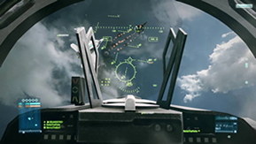

Introduction
About
Battlefield 3 is a first-person shooter video game developed by EA Digital Illusions CE and published by Electronic Arts. It is a direct sequel to 2005's Battlefield 2, and the eleventh installment in the Battlefield franchise.
|
PC Cover of Battlefield 3. |
The game was released in North America on 25 October 2011 and in Europe on 28 October 2011 for Microsoft Windows, PlayStation 3, and Xbox 360. EA Mobile also confirmed a port for the iOS platform. The game sold 5 million copies in its first week of release, and received critical acclaim from most game reviewers. It is the first game in the series that does not support versions of Windows prior to Windows Vista as the game only supports DirectX 10 and 11. The PC version is exclusive to EA's Origin platform, through which PC users also authenticate when connecting to the game. The game's sequel, Battlefield 4, was released on October 29, 2013. In Battlefield 3's campaign, players take on the personas of several military roles: a U.S. Marine, an F18 weapons system officer, an M1A2 Abrams tank operator, and a Spetsnaz GRU operative. The campaign takes place in various locations, including Iran to New York City; and follows the stories of Sergeant Henry Blackburn and Dimitri Mayakovsky.
Gameplay
|
 Screenshot of the HUD as shown in the |
Battlefield 3 features the combined arms battles across single-player, co-operative and multiplayer modes. It reintroduces several elements absent from the Bad Company games, including fighter jets, the prone position and 64-player battles on PC. To accommodate the lower player count on consoles, the ground area is limited for Xbox 360 and PS3, though fly space remains the same.
During an interview with Game Informer, EA stated that Commander Mode is unlikely to be included, which was met with some criticism on the EA forum. The game features maps set in Paris, Tehran (as well as other locations in Iran), Sulaymaniyah, New York, Wake Island, Oman, Kuwait and other parts of the Persian Gulf. The maps cover urban streets, metropolitan downtown areas, and open landscapes suited to vehicle combat. Battlefield 3 introduces the "Battlelog"; a free cross-platform social service with built-in text messaging, voice communications, game statistics, and the ability to join games that friends are already playing (though both players need to be on the same platform).
|
Screenshot of a short movie scene |
Cooperative
A demo featuring the new co-op mode was featured at Gamescom 2011. DICE general manager Karl Magnus Troedsson confirmed that a split screen option will not be available in co-op mode. Battlefield 3's new Battlelog social network, DICE noted, would be tied to all co-op matches, allowing players to try to beat friends' scores and to track their performance. It has also been confirmed that participating in co-op mode allows the player to collect points that unlock additional content that can be used in multiplayer.
Multiplayer
|
Screenshot of a game as shown in the |
Battlefield 3's multiplayer matches see players take on one of four roles: Assault, Support, Engineer and Recon. The Assault class focuses on assault rifles and healing teammates. The Support class focuses on light machine guns and supplying ammunition. The Engineer class focuses on supporting and destroying vehicles. The Recon class focuses on sniping and spotting enemies. The mechanics of the weapons have been changed to utilize the new engine: compatible weapons may have bipods attached which can then be deployed when in the prone position or near suitable scenery, and provide a significant boost to accuracy and recoil reduction. Suppressive fire from weapons blurs the vision and reduces the accuracy of those under fire, as well as health regeneration. The Recon class can put a radio beacon anywhere on the map and all squad members will be able to spawn on the location of the beacon.
Several game modes are present, including Conquest, Rush, Squad Deathmatch, Squad Rush and for the first time since Battlefield 1942, Team Deathmatch. However, more game modes are available through the purchase of extra downloadable content packs. The PC version of Battlefield 3 is by default launched via a web browser from the Battlelog web site. A server browser is present in console versions of the game, however.
Roles/Classes
|
The Assault class carries a primary weapon consisting of an assault rifle — like the M16 and AK-74 — and is now merged with the medic class — the Assault class can now heal and revive teammates. It can also function as a more offensive class with ability to swap out the revive kit for a grenade launcher. |
|
|
|
The Engineer class in Battlefield 3 is very similar to the class in Bad Company 2: its primary role is to engage tanks and armored vehicles with an array of rocket launchers such as the RPG-7 and the SMAW, or use anti tank mines. The primary weapon is a carbine rifle, with a variety of unlocks available, ranging from shotguns to sub machine guns. |
|
|
|
The Support class returns to its role it had in Battlefield 2, with its main purpose to provide heavy fire from a Light Machine Gun (like an M249 SAW), and resupply teammates with ammunition. In Battlefield 3, the Support class is broadened with the ability top use lighter weapons and assault rifles like the M4, as well as C4 explosives. |
|
|
|
The Recon class carries a sniper rifle for long range engagement, but for Battlefield 3, the Recon class has a more active role as well. The Recon also has the ability to use a laser designator to mark targets. |
|


Videos